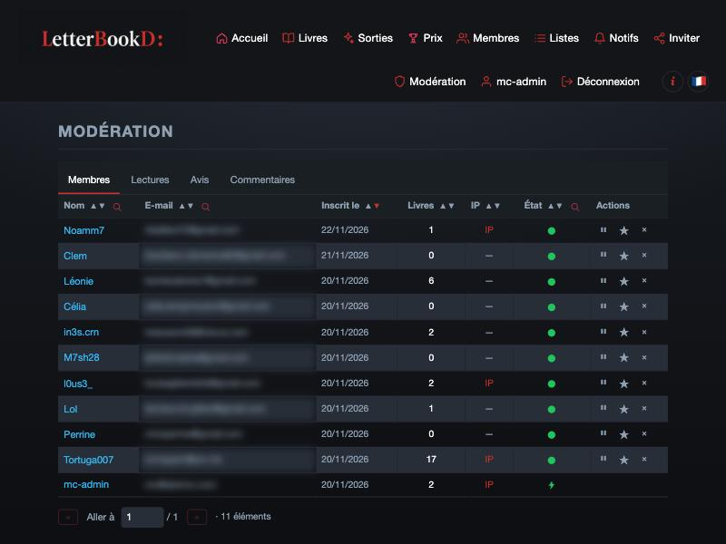

Modération — Membres Réservé aux administrateurs
À quoi ça sert : Vue admin. Panorama de tous les comptes du club : qui est actif, qui est admin, qui a été signalé via son adresse IP, et actions pour suspendre, promouvoir ou supprimer un membre. Les e-mails sont floutés dans cette documentation ; ils apparaissent en clair dans l'application.

Parcours
Quatre onglets en haut : Membres (ici), Lectures, Avis, Commentaires. Le tableau membre liste pour chaque compte : Nom (pseudo, cliquable → profil), E-mail (texte clair dans l'app), Inscrit le (date), Livres (nombre de lectures), IP (badge rouge 'IP' si une adresse IP suspecte a été relevée, tiret sinon), État (point vert = actif, éclair vert = admin). La colonne Actions fournit trois boutons icône par ligne : pause (suspendre), étoile (donner/retirer les droits admin), croix (supprimer). Chaque colonne est triable (▲▼) et filtrable via l'icône loupe qui ouvre le modal filtre.
Chaînes d'action
Chaque ligne décrit un déclencheur dans l'interface, ce qu'il ouvre (modal ou formulaire), et l'effet produit.
| Déclencheur | Modal / Champs | Effet |
|---|---|---|
| Onglets Membres / Lectures / Avis / Commentaires | Navigation par ?tab=… | Change la vue sans recharger la page entière (navigation standard). |
| Flèches ▲▼ dans un en-tête de colonne | — | Trie la colonne en ascendant (▲) ou descendant (▼). Le tri est mémorisé dans l'URL. |
| Icône loupe dans un en-tête de colonne (ouvre le modal Filtre) | Modal avec champ texte 'Filtrer — <colonne>' et boutons 'Appliquer' / 'Effacer' / 'Annuler'. | Filtre le tableau sur la colonne choisie. 'Effacer' retire le filtre. Plusieurs colonnes peuvent être filtrées en cumulé. |
| Bouton pause (||) sur une ligne membre | Formulaire POST confirmatif. | Suspend le compte : le membre ne peut plus se connecter ni poster. Il peut être réactivé plus tard (même bouton). |
| Bouton étoile (☆/★) sur une ligne membre | Formulaire POST. | Accorde ou retire les droits admin (is_staff + is_superuser). L'éclair vert dans la colonne État reflète immédiatement le changement. Un admin qui retire ses propres droits perd l'accès à la modération. |
| Bouton croix (×) sur une ligne membre | Formulaire POST confirmatif. | Supprime définitivement le compte et toutes ses données (lectures, avis, commentaires, listes, invitations). Irréversible. |
| Pied de tableau : 'Aller à [n] / X' et flèches | Pagination simple. | Navigation entre les pages de résultats. |
Modales